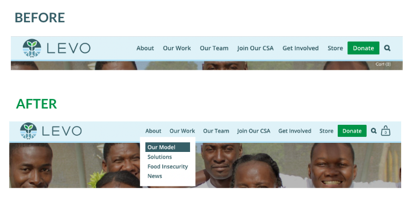

Levo International Home Page
In the Spring of 2022, I had the opportunity to work with Levo International, which creates food security solutions to build stronger
communities in Connecticut and Haiti through partnership and innovation. A team of four other students and I were tasked with increasing
their brand awareness through cohesive and professional content on both social media and their Squarespace website.
One other student and I completed updates on their website which primarily focused on cleaning up the site and making sure all content
was easily legible and accessible. Throughout our analysis of the site, we noticed pages where content was overlapping or displayed in
unfavorable ways and wanted to fix these issues.

Before and after of the header on the web version
Before and after of the header on the mobile version
On every page we fixed spacing issues, overlapping text, button size and color consistency, and link legibility. The header and footer
were also primary issues because they were overlapping and not completely responsive. For the header, I added links to highlight on hover,
a hamburger menu icon for the mobile version, and shopping bag because Levo wanted to focus on their products.
For the footer I made it responsive by adding columns and again added links and social media logos to highlight on hover. Finally, we added and cleaned up their
member interest forms to increase volunteering, added previews of updated instagram and twitter posts, and cleaned up the events page through spacing and content hierarchy.

Footer on the web version
Before and after of fixing spacing issues and consistency